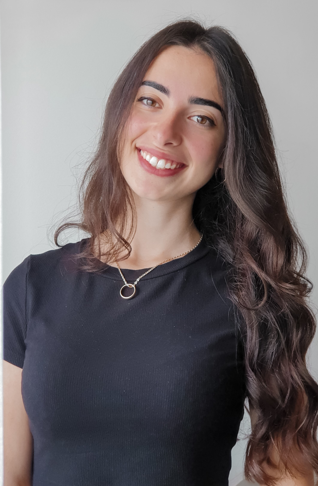

Conference Program - SISAP 2025
17th International Conference on Similarity Search and Applications
Presentations:
- Full Papers: 25' (18' for presentation + 7' for Q&A)
- Short Papers: 15' (10' for presentation + 5' for Q&A)
- Indexing Challenge Papers: 15' (10' for presentation + 5' for Q&A)
- Doctoral Symposium Papers: 30' (15' for presentation + 15' for Q&A)
Posters and Graphical Abstracts:
- Demonstration Papers: Authors of the demonstration papers are requested to bring a printed poster to support the explanation of their demonstration. Posters should be in A1 portrait format; poster boards and fasteners will be provided on-site
- All Papers: All authors are encouraged to create a Graphical Abstract (online poster) for their accepted paper. Graphical Abstracts will be posted on the conference website (submission link). There will be no dedicated poster session, so posters do not need to be printed. However, authors are welcome to bring a portable printed version (A4 or A3) to facilitate discussions and interactions with other participants.
üìÑ Download the SISAP 2025 Program Outline (PDF)
Wednesday, October 1
| 08:30-09:00 |
RegistrationRegistration desk is open |
| 09:00-09:15 |
OpeningChairs: Björn Þór Jónsson (Reykjavik University, Iceland), Lucia Vadicamo (CNR-ISTI, Italy), Vladimir Mic (Aarhus University, Denmark), and Giuseppe Amato (CNR-ISTI, Italy) |
| 09:15-10:45 |
Keynote 1: Scalable Methods for Visual Data Representation, Search, and VisualizationKai Uwe Barthel (HTW Berlin, Germany)Chair: Lucia Vadicamo (CNR-ISTI, Italy) |
| 10:45-11:15 | Coffee Break |
| 11:15-13:00 |
Session 1: FoundationsChair: Richard Connor (University of St Andrews, UK) |
|
Michael E. Houle, Vincent Oria and Hao Xu
Efficient Local Intrinsic Dimensionality Estimation in Evolving Deep Representations (ID 40) |
|
|
Fabrizio Angiulli, Fabio Fassetti and Maria Pia Zupi 
CF-OOD: Concentration-Free density estimation for Reliable Out-of-Distribution Detection (ID 7) |
|
|
James Bailey, Ricardo Campello and Michael E. Houle
Intrinsic Dimension, Degrees of Freedom, Odds and Uniformity: A Unified Perspective (ID 6) |
|
|
Victor Reyes and Stephane Marchand-Maillet
Assessing the quality of dimension reduction methods based on fuzzy simplicial sets (ID 33, short) |
|
|
Yan Ruan, Detao Ji, Kun Luo, Yuhang Lou, Minhua Lu and Rui Mao
Variance-based Pivot Selection for Metric Spaces (ID 42, short) |
|
| 13:00-14:00 | Lunch |
| 15:00-15:55 |
Session 2: Similarity MeasuresChair: Kai Uwe Barthel (HTW Berlin, Germany) |
|
Anton Danholt Lautrup, Hafiz Saud Arshad, Tobias Hyrup, Muhammad Rajabinasab, Arthur Zimek and Peter Schneider-Kamp
Similarity Based on Resample Exposure (ID 32) |
|
|
Sid Ahmed Benabderrahmane and Talal Rahwan
Metric Matters: A Formal Evaluation of Similarity Measures in Active Learning for Cyber Threat Intelligence (ID 47) |
|
|
Evgeny Dantsin and Alexander Wolpert
Quantification of Similarities: Embeddings into Euclidean Spaces and Taxonomies (ID 19) |
|
|
Simone Sandri, Andrea Molinari, Andrea Leoni and Filippo Costamagna
PUFFME: Probabilistic Unkeyed Feature Fusion for Matching Entities (ID 24, short paper) |
|
|
Jeongyon Shim
Relation Similarity Based Thought Chain Extraction Mechanism from Value-Belief Network (ID 31, short paper) |
|
| 15:55-16:30 | Coffee Break |
| 16:30-17:35 |
Session 3: ClusteringChair: Michael Houle (New Jersey Institute of Technology, USA) |
|
Camilla Birch Okkels, Erik Thordsen, Martin Aumüller, Arthur Zimek, and Erich Schubert
Approximate Single-Linkage Clustering Using Graph-based Indexes: MST-based Approaches and Incremental Searchers (ID 39) |
|
|
Hugo Sanz-González and Conrado Martínez
Fast and Accurate Estimates for External Clustering Validation Measures (ID 25) |
|
|
Erich Schubert
Hierarchical Density-Based Clustering using Incremental Similarity Search (ID 50, short) |
|
| 17:35-17:45 | 10 min break (moving from Nauthóll to Reykjavik University foyer) |
| 17:45-18:45 |
@ Reykjavik University foyer
Session 4: DemonstrationsChair: Gylfi Þór Guðmundsson (Reykjavik University, Iceland) |
|
Francesca Scotti , Lucia Vadicamo, Giuseppe Amato and Fabio Carrara
A Comparative Demonstration of Relevance Feedback Methods for Image Retrieval (ID 63) |
|
|
Ivana Sixtová, Ladislav Peska, Jakub Lokoc, David Bernhauer and Tomas Skopal
VISAnt: Unsupervised data exploration with Chernoff faces (ID 53) |
|
|
Federico Scarscelli, Claudius Zelenka, Peer Kröger and Florian Schütte
Eddy Hunter: a data mining system for high-resolution eddy signals, leveraging spatio-temporal similarities in the SWOT satellite data (ID 51) |
|
| 18:15-19:35 |
@ Reykjavik University foyer
Reception |
{kind=link}
{kind=link}
{kind=link}
Thursday, October 2
| 08:30-09:00 |
RegistrationRegistration desk is open |
| 09:00-10:30 |
Keynote 2: Efficient Retrieval over Learned Representations of Text: Challenges and OpportunitiesFranco Maria Nardini (CNR-ISTI, Italy)Chair: Giuseppe Amato (CNR-ISTI, Italy) |
| 10:30-10:55 | Coffee Break |
| 10:55-12:00 |
Session 5: IndexingChair: Cole Foster (Brown University, USA) |
|
Erik Thordsen and Erich Schubert
Theoretical and Practical Insights into Graph-Based Indexing (ID 45) |
|
|
Richard Connor, Alan Dearle and Ben Claydon
Equi-Voronoi Polytopes: A Geometric Basis for 2-bit Quantisation (ID 4) |
|
|
Omar Shahbaz Khan, Gylfi Þór Guðmundsson and Björn Þór Jónsson
The Curious Case of High-Dimensional Indexing as a File Structure: A Case Study of eCP-FS , (ID 44, short paper) |
|
| 12:00-12:10 | 10 min break |
| 12:10-13:15 |
Session 6: Search and RetrievalChair: Erich Schubert (TU Dortmund University, Germany) |
|
Bastian Jäckl, Vojtěch Kloda, Daniel A. Keim and Jakub Lokoč
Dynamic Sub-Region Search in Homogeneous Collections using CLIP (ID 35) |
|
|
Chi Mai Nguyen, Hoang Anh Phi Tran, Phat Trien Thai, Huu Doanh Nguyen and Van Tuan Nguyen
Lightweight Semantic Search for Low-Resource Languages: A Case Study in Vietnamese Information Retrieval (ID 15) |
|
|
Shubham Chatterjee
On the Theoretical Advantages of Bilinear Similarities in Dense Retrieval (ID 13, short paper) |
|
| 13:15-14:30 | Lunch |
| 14:30-16:00 |
Session 7: Indexing ChallengeChair: Martin Aumüller (ITU Copenhagen, Denmark) and Vladimir Mic (Aarhus University, Denmark) |
|
Eric S. Tellez, Edgar Chavez, Martin Aumüller and Vladimir Mic,
Overview of the SISAP 2025 Indexing Challenge |
|
|
Yuhang Lou, Linyun Ma, Kun Luo, Yan Ruan, Huijia Wu, Minhua Lu and Rui Mao
Memory-Constrained DiskANN: Efficient Approximate Nearest Neighbor Search Under Resource Constraints (ID 61) |
|
|
Naoya Higuchi, Yasunobu Imamura, Takeshi Shinohara, Kouichi Hirata and Tetsuji Kuboyama
Double Filtering Using Short and Long Quantized Projections (ID 54) |
|
|
Benjamin Bustos and Jiale Chen
SISAP Indexing Challenge 2025 – Solution for Task 2 using Root Join (ID 52) |
|
|
Alan Dearle, Richard Connor, Ben Claydon and Ferdia McKeogh
Fast, Compact NN-table build using Equi-Voronoi Polytopes (ID 57) |
|
|
Cole Foster, Scarlett Magdaleno-Gatica and Benjamin Kimia
Refinement-Based Graph Construction for Search in Low-Memory Systems (ID 56) |
|
| 16:00-16:30 | Coffee Break |
| 16:30-17:30 |
Session 8: Doctoral SymposiumChair: Laurent Amsaleg (IRISA-CNRS, France) |
|
Victor Reyes
Explaining Hubness by the Expected k-occurrences (ID 60) |
|
Elena Garcia-Morato 
Combining Dissimilarity Spaces to Improve ANN Search (ID 59) |
|
| 18:00-21:30 |
Social Event and Banquet |
Friday, October 3
| 08:30-09:00 |
RegistrationRegistration desk is open |
| 09:00-10:30 |
Keynote 3: Videntifier: Applications and Challenges of Scalable Similarity SearchAri Jónsson (Videntifier, Iceland)Chair: Björn Þór Jónsson (Reykjavik University, Iceland) |
| 10:30-11:00 | Coffee Break |
| 11:00-12:30 |
Session 9: Interactive Retrieval for Multimedia Collections (IRMC) Special Session + PanelChair: Omar Shahbaz Khan (Reykjavik University, Reykjavik, Iceland) |
|
Bastian Jäckl, Vojtěch Kloda, Daniel Keim and Jakub Lokoc
Experimental evaluation of static image sub-region based search models using CLIP (ID 36) |
|
|
Matúš Šikyňa and Pavel Zezula
Integrating Relevance Feedback for Effective Personalisation in Vector Search (ID 8, short paper) |
|
|
Panel
panelists: TBA |
|
| 12:30-13:30 | Lunch |
| 13:30-14:35 |
Session 10: ApplicationsChair: Jakub Lokoc (Charles University in Prague, Czechia) |
Giulio Federico  , Marco Di Benedetto, Fabio Carrara and Claudio Gennaro , Marco Di Benedetto, Fabio Carrara and Claudio Gennaro
ViSketch-GPT: Collaborative Multi-Scale Feature Extraction for Hand-Drawn Sketch Retrieval (ID 12) |
|
|
Grina Wiem and Ali Douik
FLAME GAN: High-Fidelity 3D Face Reconstruction via Disentangled Representations and Explicit Geometric Control (ID 46) |
|
|
Nadine-Sarah Schüler, Maximilian von Zastrow, Michael Eichberg and Tobias Vent
SCAPE - Semantically Context-Aware Password Generation using Word Embeddings (ID 16) |
|
| 14:35-14:45 | 10 min break |
| 14:45-15:50 |
Session 11: Learning-Based MethodsChair: Franco Maria Nardini (CNR-ISTI, Italy) |
|
Aleksandar Tomcic , Milos Savic, Dusan Simic and Milos Radovanovic
Dynamic Graph Embedding through Hub-aware Random Walks (ID 2) |
|
|
Muhammad Rajabinasab , Anton Danholt Lautrup, Peter Schneider-Kamp and Arthur Zimek
Towards Semi-Supervised Subspace Learning for Outlier Detection in Big Data (ID 23) |
|
|
Ben Claydon, Richard Connor and Alan Dearle
Learning to Find Good Hash Functions for Embeddings (ID 5) |
|
| 15:50-16:10 |
Closing and Announcement of Next SISAP Venue |
{kind=link}
{kind=link}